1. How Tracker is organised
Tracker is a program that runs on your own Windows PC or Mac and shows its pages in your web browser. Nothing is stored online: there is no account and no server of ours. The pieces fit together like this:
| Piece | What it is |
|---|---|
| Tracker | One area of your life or studies, for example “Japanese” or “My degree”. You can have as many as you like; each has its own pages, courses, activities, notes and library. They are listed in the sidebar. |
| Symbol | The small icon of a tracker, picked from a set (there are no emoji). It is shown in the sidebar and on the Overview. |
| Course | A part of a tracker: a course, a language, a topic. You choose the word (Course, Skill, Language, Topic...). It also appears as a “subfield” in some places. |
| Activity | What you did: Reading, Lecture, Practice, Listening, Writing... |
| Session | One stretch of time: a course, an activity, a start, a length, and optionally a note and a book. |
| Note | Something you wrote, tied to courses and books, that can link to other notes. |
| Book or article | A text in your Library that you read and can attach sessions and notes to. |
| Goal | A weekly or total number of hours for a course, or a daily goal for the tracker. |
Each tracker has six pages along the top: Dashboard, Log, Notes, Library, Stats and Settings, which holds the settings of that tracker (its courses, activities, name, symbol and goals) together with the theme, the library settings and the notes graph settings, which are kept in this browser and used in every tracker. Overview, at the top of the sidebar, combines all your trackers and has two pages of its own: Overview and Settings, which holds the settings of the whole program (data and backups, book search, the AI assistant, privacy and about). In this manual, “Overview, Settings, Privacy” means the Privacy section of that second page.

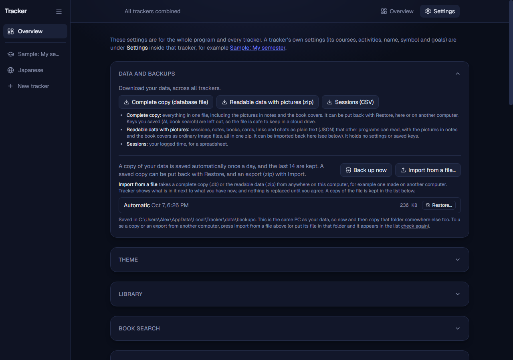
2. Installing, starting, quitting
Installing
Download Tracker-Setup.exe and open it. Windows may say “Windows protected your PC” because the program is not signed with a paid certificate: choose More info, then Run anyway. Setup installs for your user only and needs no administrator rights. It offers a Desktop shortcut and adds Tracker to the Start menu. Tracker works on Windows 10 and 11 (64-bit), and on macOS 13.5 or newer (below); there is no Linux version yet.
Install on a Mac
Download Tracker-Mac.dmg (one download for Apple Silicon and Intel Macs, macOS 13.5 or newer), open it, and drag Tracker onto the Applications folder. Tracker is not signed with a paid Apple certificate, so macOS stops it the first time, once:
- macOS 15 (Sequoia) and newer: open Tracker, close the message, then open System Settings, Privacy & Security, scroll down to Security and press Open Anyway next to the line about Tracker, and confirm. The button is there for about an hour after the message.
- macOS 13 and 14: Control-click (or right-click) Tracker in the Applications folder, choose Open, then Open again.
After that it opens like any app, and updates from inside Tracker do not ask again. On a Mac, Tracker’s icon is a small clock in the menu bar at the top right (it has no Dock icon); click it to open Tracker, Control-click it for its menu. Your data is in ~/Library/Application Support/Tracker/data and the log in ~/Library/Application Support/Tracker/logs/tracker.log. To remove it, quit Tracker and drag it to the Trash; the data folder stays until you delete it.
Starting
Start Tracker from the Start menu or the Desktop shortcut (on a Mac, from the Applications folder). It runs quietly in the background with no window of its own, opens in your default browser, and puts a small icon near the clock (if you cannot see it, click the little arrow next to the clock). Click the icon to open Tracker in the browser; right-click it for Open Tracker, Show the log folder and Quit Tracker. Starting Tracker a second time just opens the first one.
The address in the browser is http://localhost:3417 (or a nearby number if that one is busy). It works only on your computer: no other device on your network can open it, which is also why you cannot open Tracker from a phone.
Quitting
Right-click the icon (Control-click on a Mac) and choose Quit Tracker, or press Quit Tracker in Overview, Settings, About. Closing the browser tab does not stop Tracker, and a running timer is kept (it lives in your browser, see The timer).
Removing it
On a Mac, drag Tracker to the Trash (see above). On Windows: Windows Settings, Apps, Installed apps, Tracker, Uninstall. It asks whether to delete your data as well; the default is No, so installing Tracker again later carries on where you left off.
3. Trackers
The first time you open Tracker you see the welcome page.

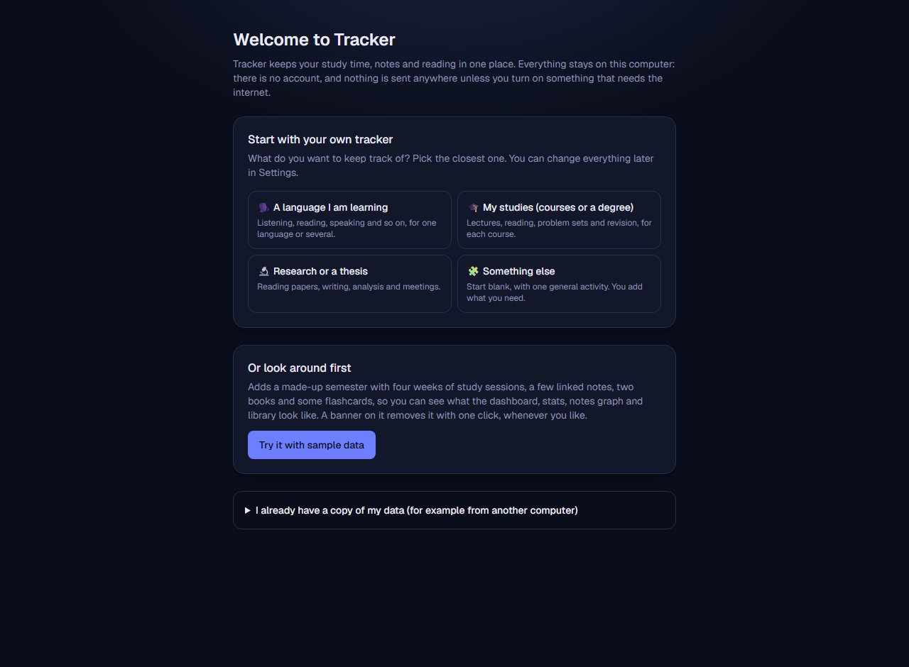
- Start with your own tracker. Choose A language I am learning, My studies (courses or a degree), Research or a thesis or Something else. Each comes with sensible activities and a symbol you can change later. Then name it, say what each part is called (one word, like Course, Language or Topic) and optionally type your first ones separated by commas. Create my tracker makes it.
- Try it with sample data. Adds a made-up semester: three courses, four weeks of sessions, nine linked notes (some written under others), two books and goals. A banner on every page says it is sample data and has Remove sample data, which takes only the sample away (a copy of your data is saved first).
- I already have a copy of my data. Opens the restore and import options, for a copy or export from another computer (see Backups, exports, moving).
More trackers: press New tracker at the bottom of the sidebar. Changing one: its own Settings, This tracker, lets you change its symbol (an icon chosen from a set, which also shows in the sidebar and on the Overview) and name, what each part is called, its daily goal, and its order in the sidebar. Deleting one: Delete this tracker in the same place. Tracker shows what will be removed (sessions, courses, activities, notes and books), and if the tracker holds any sessions, notes or books it asks you to type the tracker’s name before Delete permanently works. A copy of your data is saved first (“Before a delete” in the list of saved copies).
4. Courses and activities
Both are managed in the tracker’s own Settings, in the lists at the top. You can add, rename, recolour and delete them, and drag the grip (or focus it and use the arrow keys) to put them in the order you like.

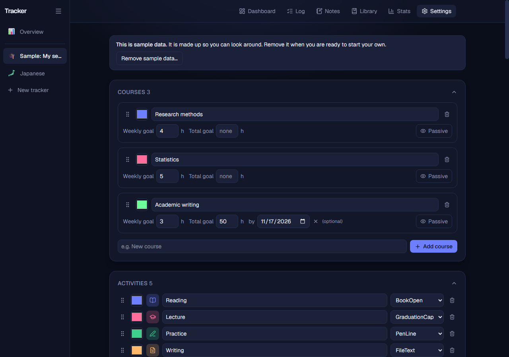
Courses
- Weekly goal: hours per week. It becomes a progress bar on the Dashboard.
- Total goal: hours in all, with an optional finish date. The Dashboard then shows how far along you are and, with a date, how many hours a week it takes to finish in time.
- Passive: a passive course is left out of the Dashboard’s weekly goals list (for example something you only follow loosely). Its time and goals are kept.
- The colour you pick is used in lists, charts, notes and the graph.
Activities
Each has a name, a colour and an icon. Add the ones you actually use; an activity can be used with any course.
Deleting a course or activity asks first, and it also deletes every session logged under it. If you only want a course out of the way, mark it Passive instead.
5. The Dashboard

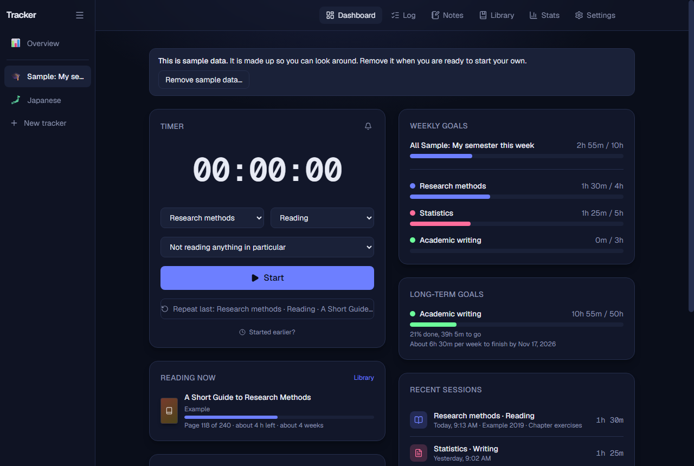
- Timer: see the next section.
- Reading now: the books you have marked as Reading, with the page you are on and an estimate of how long is left.
- Today: time logged today against the daily goal, your streak (days in a row with time logged, in any tracker) and a calendar of your last weeks. Each square is a day; the darker, the more time. Click a day to see that day’s sessions in the Log. The number of weeks shown depends on how wide the card is: squares are kept big enough to click.
- Weekly goals: a bar for the whole tracker and one for each course that has a goal.
- Long-term goals: courses with a total goal, with percent done, hours to go and the pace needed.
- Recent sessions: your latest sessions, with the book and note if any.
6. The timer

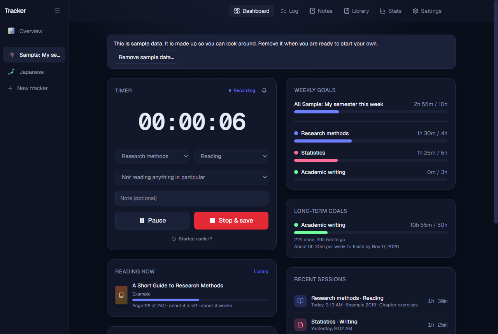
Starting
Choose a course and an activity. If you keep a Library, a third box lets you pick the book or article you are reading (“Not reading anything in particular” otherwise); picking a book also selects its course. Press Start. Repeat last starts the same course, activity and book as your most recent session in one click.
While it runs
- Pause stops the clock without ending the session; press it again to resume. Paused time is not counted.
- You can type a note about the session while it runs.
- Started earlier? moves the start back by 5m, 10m, 15m, 30m, 45m or 1h when you forgot to press Start. It also works before you start: the same buttons then start the timer now, counting from that long ago.
- The timer keeps running if you close the tab, reload the page or quit and reopen your browser: it is kept in your browser, and its time is worked out from when it started. (If you clear your browser’s site data, a running timer is lost, so save first.)
- The bell icon switches break reminders on or off. With it on, your browser may ask permission to show notifications, and Tracker reminds you to take a break after every 30 minutes of active time (paused time does not count). The choice is kept in this browser.
Saving
Stop & save stores the session. If saving fails (for example the disk is full), Tracker says why and the timer keeps running, so nothing is lost. Right after saving, a bar says “Saved” with the time and offers Add note (or Skip). If the session was about a book or article, it also asks Now on page so you can type the page you reached and press Save page.
7. The Log

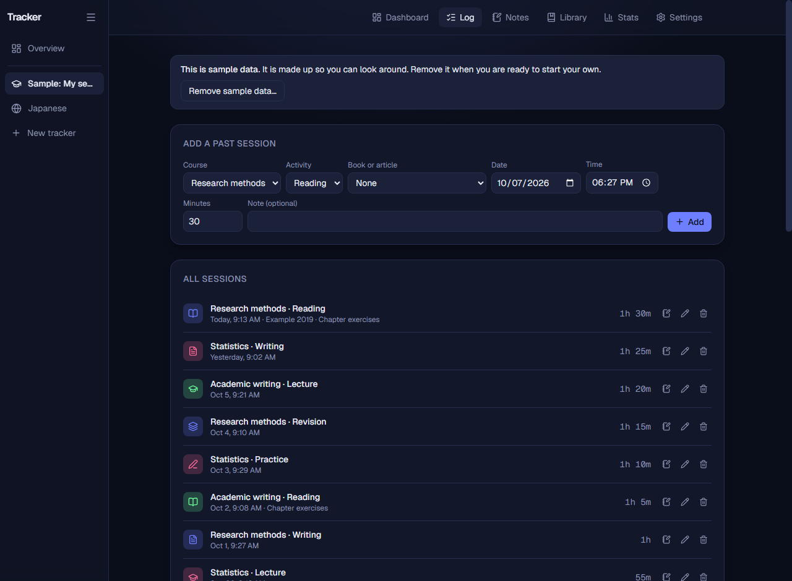
- Add a past session: choose the course, activity, optionally a book, the date, the time, the minutes and a note, then Add. The date and time start as now, or as the day you clicked in the Dashboard calendar.
- All sessions lists everything newest first. Each row has buttons to write a note about that session (the number shows how many exist), edit it (every field can be changed) and delete it.
- Coming from a day in the calendar, the list shows only that day, with a small button to show them all again.
8. Stats

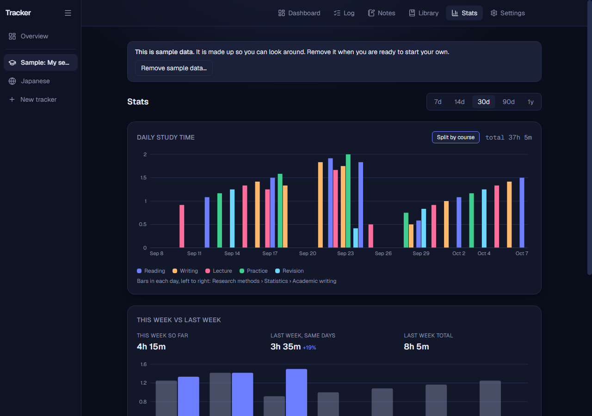
- Daily study time as bars, for 7d, 14d, 30d, 90d or 1y. Split by course puts each course’s time side by side within a day, left to right in the order of your course list. Hover or focus a bar for the exact time.
- This week vs last week: this week so far, last week up to the same day (with the difference in percent) and last week in total, with a chart by weekday.
- By course and by activity: where the time went, as bars with totals.

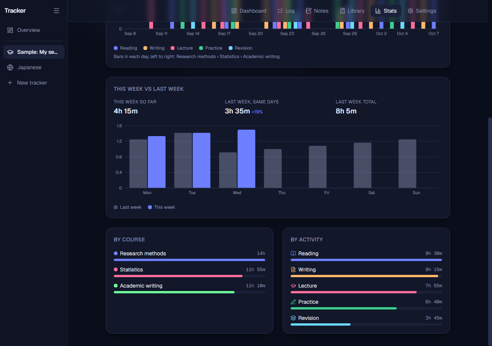
9. Overview
The first item in the sidebar. It adds up all your trackers: today, this week, all time with the number of sessions, your streak (a day counts if any tracker has time on it), a daily chart, time per tracker, your top courses across trackers, and the most recent sessions.

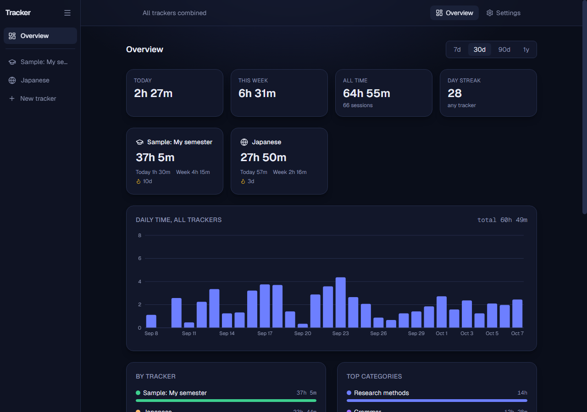
10. Notes and the graph

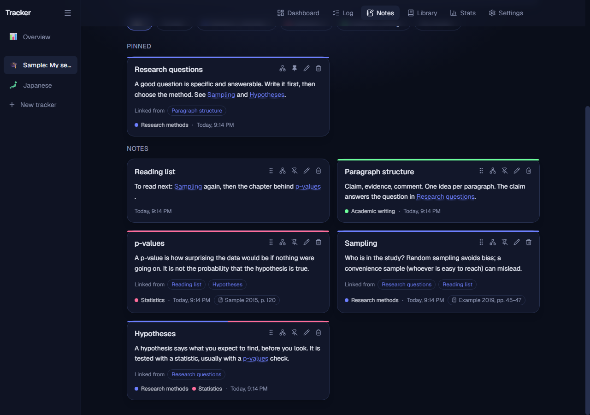
Writing
- Press New note to open the editor. Anything half written is kept if you leave, until you save or discard it.
- Select text and use the toolbar: bold, italic, strikethrough, highlight, code, heading, quote, bullet list, checklist, link and picture. Ticking a checklist item on a saved note works right on the card.
- Pictures: paste a screenshot, or use the picture button. They are stored inside your data (see Backups).
- Start from: Learned, Question, Checklist and Terms fill in a starting shape.
- Courses: tick one or several; the note then appears under each. About ties it to a book or article, with an optional page number. A thin line of each course's colour runs along the top of the card (a note in several courses shows every colour side by side) and curves with the card's corners in every theme.
- Under: put the note under one or more other notes (type part of a title and pick it; the × takes it out again). See Notes under notes.
- Pin keeps a note at the top. Ctrl+Enter saves (another key can be chosen in Shortcuts).
- You can also write a note right after a session (see The timer) or about a session in the Log.
Linking
Type a note’s title between double brackets, like [[Sampling]], and it becomes a link. A link to a title that does not exist yet is shown as an “unwritten link”, ready to be written. Each card lists Linked from: the notes that point to it.
Notes under notes
A note can sit under another note, for example Random sampling under Sampling. A note can be under several notes at once, and a note under a note can have notes under it too, as deep as you like. Put a note under another with Under in its editor, or with Put under... in the graph.
- A note is in the courses of every note above it as well as in its own. In the example, Random sampling is in Research methods because Sampling is, without being given that course itself. In the note’s editor that course shows as a dashed chip. You can still give it a course of its own as well (press the chip), but a new note under a note, or about a book that is under its course, is not given the course you were filtering by or the one a running timer is for: it has it already, and a second line to the same place would only add clutter.
- A note is also about the books of every note above it, the way it is in their courses. If Sampling is about a book, Random sampling shows that book too, as a dashed chip, and in the graph its bubble lists it under Also about. There is no line of its own to that book. A note can still be about a book of its own as well. Its editor shows the book too (the About box reads the book, through the note above), and the Page box is there as well: the page is then in that book, and it is shown beside the dashed chip.
- Each card shows Under with the notes it is under, and how many notes are under it; click one to go to it.
- A note cannot be put under itself, or under a note that is already under it. Tracker refuses that and says why.
- Deleting a note that has notes under it keeps them: they are given its courses and move up to the notes it was under. The question before deleting says so.
- A [[link]] and being under a note are separate: removing one leaves the other.
- The faint dashed lines the AI suggests (when it is on) never join notes of one family: two notes under the same note, or one above the other. The hierarchy already ties those together.
Books under courses, notes under books
The same idea reaches the Library: a book can sit under the course it is about, and the notes you write about a book sit under that book. So a course holds its books, and a book holds its notes.
- When you choose a course for a book in the Library, Tracker asks how the book is joined to it: Put it under the course (the first choice) or A normal connection, a plain line that says nothing more. Books you already had are under their course.
- A note you write about a book (About in the note’s editor) is put under that book at once, and you do not have to choose.
- As with notes under notes, a note is in the course of the book it is under, as well as its own courses. A book that is only connected to its course does not pass the course down to its notes.
- In the graph, a book under its course and a note under its book are joined by dashed lines, each in its own look (see Four kinds of line for being under something below). Put under... works for them too: a book goes under a course, a note goes under a book. Selecting the line of a book and its course shows Type: Under or Normal, to switch between the two.
Grid, full text and list
Beside Cards and Graph, three small buttons choose how the cards show: Grid (small cards with the title, a few lines, the course dots, the book and the date; the usual choice), Full text (every note in full) and List (one row per note). S, M and L set the size in Grid (how many cards side by side and how many lines show) and in List (how roomy the rows are). In Grid and List, click a note to show it in full where it is, with its pictures and buttons; click its title again, press Esc or click another note to make it small again. A note opened from a link, a citation or the graph is shown in full. The same choice is in each tracker’s Settings, Notes, and it is kept in this browser for every tracker.
Finding
Filter by All, Pinned, a course, or No course, or type in Search notes. A course lists its notes and the notes under them. Notes can be dragged into your own order.
The graph
Press Graph (next to Cards) to see your notes as dots joined by their links. Courses are the large ring-shaped dots, books are rectangles, notes are dots coloured by course (a note in two courses is split in two colours).

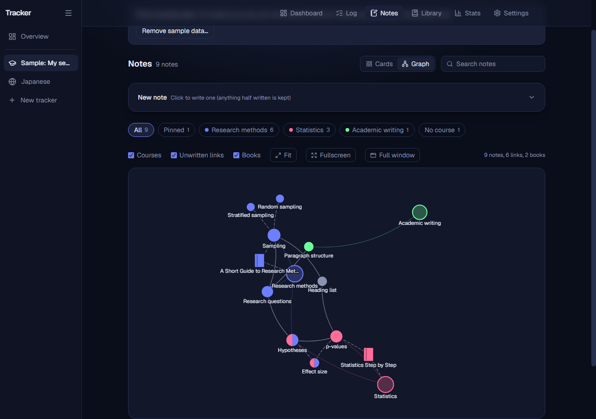
- The tick boxes Courses, Unwritten links and Books show or hide those kinds of dots; Fit fits everything in view. Your choices are remembered.
- Click a dot or a line and its details open in a bubble beside it. A line’s bubble names its kind (the names used in Customise) and its two ends, with an arrow from what is under to what it is under. The bubble follows the dot when you move or zoom the picture, opens on the dot’s other side near the edge of the picture, and has the buttons Open note (or Open in Library for a book), Connect to... and Clear. Clicking empty space closes it.
- The note panel. Open note in a note’s bubble (or a double-click on its dot) opens the note in a panel at the right of the graph, below it on a narrow screen, with the whole editor: title, text, courses, under, book and page, pictures and pin, with Save and Delete note. It stays open after saving, and clicking another note’s dot shows that note in it. The close button or Esc closes it (in a field, the first Esc leaves the field). It is there in Full window and Fullscreen too. Go to card leaves the graph and shows the note’s card instead.
- New notes from the graph. New note beside Fit, the N key, or a double-click on empty space opens the panel with an empty editor. Add note in a dot’s bubble starts it already under that note, about that book, or in that course. Nothing is saved until you press Add note; the new note’s dot is then selected and brought to the middle.
- Full window (next to Fullscreen) makes the graph fill this browser window, without taking over the screen. It is for people who keep Tracker in a smaller window beside other things. The tick boxes and Fit come along, Esc leaves it, and Open note leaves it before showing the note. It works together with Fullscreen.
- Fullscreen (when your browser allows it) gives the graph the whole screen. Esc leaves it.
- The picture stays as you left it. Tracker remembers where each dot is, in this browser, so the graph looks the same every time you open it, and a dot you move stays where it comes to rest. A new note appears next to what it is connected to. A dot is never left sitting on a line it is not part of: it is moved just off it. Changing how hard the lines pull (Customise) lays everything out again.
- Four kinds of line for being under something. A dashed line runs from a book to the course it is under, from a note to the book it is about, and from a note to each note it is under. It pulls the lower dot close, so what is under something gathers around it, and it has a look of its own by how far down it is, so that you can tell the levels apart. A primary note is one about a book (or a note with nothing above it), a secondary note is under a primary note, and a tertiary note is under a secondary note, or anywhere further down. The four lines, from the top: subfield and book (dashed, in the course’s colour), book and primary note (heavy dashed, in the theme’s accent colour), primary and secondary note (dashed, the accent half faded) and secondary and tertiary note (thin dashed, grey). A dashed line is always the hierarchy: a [[link]] is a dotted line in the colour of a course the two notes share (or else the first note’s course; orange when neither has one), and a note in a course has a thin solid line in the course’s colour. In a light theme these automatic colours are darkened as much as needed to stay easy to see. None has an arrowhead until you switch it on in Customise. A note has a line to a course only for the courses you gave it yourself; it reaches the others through what is above it. If a [[link]] also joins two notes, they share that one line. A book that is only connected to its course has a plain thin line in the course’s colour instead. Arrowheads, pointing at the one above, can be switched on in Customise.
- Put under... (next to Connect to... when a note or a book is selected) puts it under the note, book or course you click next: a note goes under a note or a book, a book goes under a course. The shortcut: hold Alt and drag the note or book onto what it goes under (for a book and a course, Connect to... and Shift-drag make a normal connection). See Shortcuts for one for each kind of line. Select an under line and press Disconnect to take a note out from under another, or a book out of its course.
- Shortcuts. Hold keys while you drag from one dot onto another to choose the kind of connection: Shift makes a normal connection (two notes get a [[link]], a note joins a course, a note is about a book), Shift+1 puts a book under a course, Shift+2 a note under a book, Shift+3 or Shift+4 the dragged note under the other note (the message says whether it became a secondary or a tertiary note), Shift+5 adds a note to a course, and Alt puts it under whatever it is dropped on. For the book and course shortcuts either dot can be the one dragged. If the two dots do not fit the keys, nothing changes and a short line says what the keys join. In the graph, N starts a new note and F fits the picture. Every shortcut can be changed in each tracker’s Settings, Shortcuts (press Change, then the new keys; Esc cancels; a key that is already used is refused). Kept in this browser.
- Change a connection’s type. Click the line between two notes and its bubble shows Type: Link (a [[link]] in the text) or Under (the first note under the second). Switching from a link takes the [[link]] out of the text (the words stay) and puts the note under the other; switching to a link takes it out from under and adds the [[link]] to its Related line. Swap turns an under line round, so the note that was above goes under. For a book and its course the choice is Under or Normal. A comment on the line moves with it, the line stays selected, and one Undo puts everything back. If the new connection cannot be made (for example it would put a note under itself), nothing changes.
- A connection can carry a short comment that keeps its history, so you can write why two notes belong together. The comment is written along the line, tilted with it and cut with “...” to fit between the two dots; select the line to read it in full. A changed or removed comment can be brought back with Restore.
- In any tracker’s Settings, Notes graph, you can choose the shape of each kind of dot and how the graph moves (it follows your computer’s “reduce motion” setting by default).
- Customise, in the same place, starts closed and is optional. For every kind of line, listed from the most important (it pulls hardest) to the least: subfield and book, book and primary, primary and secondary, secondary and tertiary, links, note and subfield, and suggestions, you can set its style (solid, dashed or dotted), width, colour, opacity and strength (how hard it pulls its two dots together), and for the four lines for being under something whether they have an arrowhead (off to begin with); for every kind of dot its fill colour and opacity and its border colour and width; and the general pull: Spread (how hard dots push apart) and Centre (how hard everything is pulled to the middle). Background sets the picture’s background: automatically it is pitch black in a dark theme (so the dots and lines stand out from it) and the theme’s own in a light one. Automatic keeps the colour the graph picks itself, such as a course’s colour. A line still lights up when its dot is selected and fades when another is. Back to the defaults brings back the usual look. The choices are kept in this browser and used in every tracker.

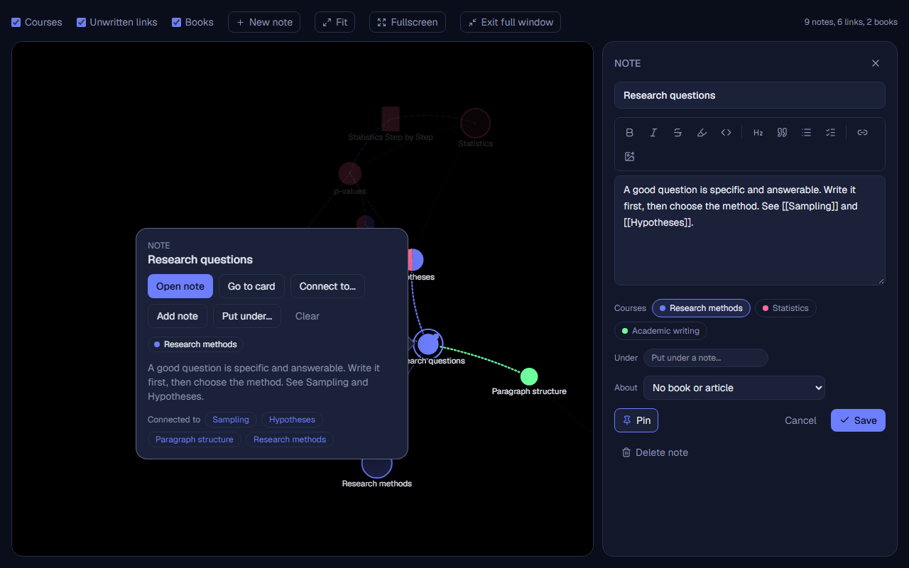
11. The Library

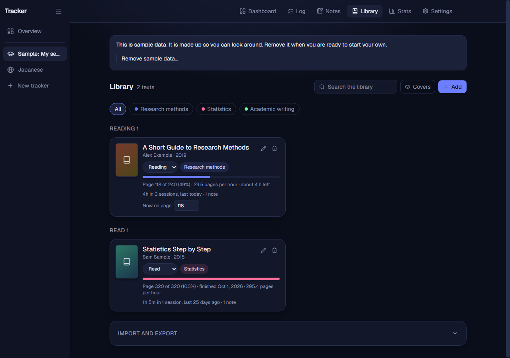
Adding a text
Press Add. In the box, type:
- an ISBN: finds that one book (Open Library first, then Google Books for missing details);
- a DOI: finds that article or chapter on Crossref;
- words: searches Open Library for books and Crossref for articles and chapters, and also ISBNdb and Google Books if you saved their keys (see below).

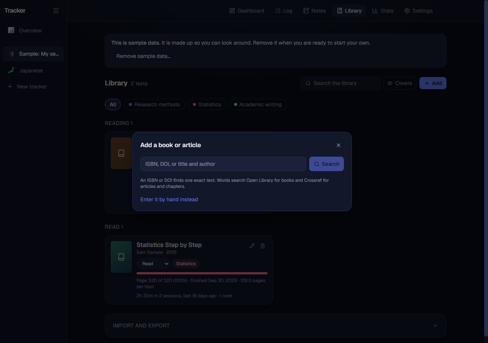
Pick a result, check and correct the details (title, authors, year, publisher, pages, edition...) and save. If you choose a course for the book, Tracker asks whether to put the book under that course or to make it a normal connection (see Books under courses, notes under books). Enter it by hand instead skips the search entirely. When a book comes from a search, Tracker also keeps its cover picture.
Reading a text
- Status: To read, Reading, Paused, Read. Starting to read and finishing are dated for you.
- Now on page: type the page you are on. Tracker shows the percent done, pages per hour from your timed sessions, and the time left (“about 4 h left”). Settings, Library (in any tracker) can also add a guess of how many weeks that is at your recent pace; it is off by default because it is only a rough guess, and the hours are useful on their own.
- Pick the text in the timer and the session counts towards it (“4h in 3 sessions, last today”).
- Notes about a text show how many there are, and can name the page they are about.
- Filter by course, search with Search the library, and use Covers to show or hide the pictures.
Citations and sharing
Import and export (below the list) copies your citations as BibTeX or RIS for a reference manager or paper, and reads those formats back in.
Better search with keys (optional)
Open Library and Crossref are free but do not know every edition. In Overview, Settings, Book search, you can add an ISBNdb key (a paid service with a short free trial, with a large catalogue in many languages) and/or a Google Books key (free, with limits; you create it in Google Cloud Console). A key is checked when you save it, kept only on your computer, never shown again, and sent only to its own service.
12. The AI tab
Optional and off by default. Until you turn it on, the tab shows “The AI tab is off” and nothing is ever sent anywhere.

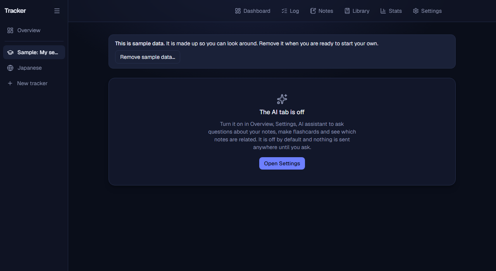
Turning it on
Overview, Settings, AI assistant, Show the AI tab. Then choose an engine:
- Ollama (recommended for privacy): a free program from ollama.com that runs language models on your own computer. Install and start it, and Tracker finds it at the address shown (Where Ollama is running; the default is right unless it runs on another computer; if it cannot be reached, Tracker says so and has a check again link). Under Suggested for this computer Tracker recommends models that suit your computer’s memory and graphics card and can ask Ollama to download them, with a progress bar. Choose a Model that answers questions and, optionally, a Model that searches your notes (without one, Tracker matches words only; a multilingual one finds notes by meaning). Test the connection checks that they work. Nothing leaves your computer.
- An online service that works like OpenAI’s: a Service address (OpenAI and many others use one ending in /v1), a Chat model, a Search model and a Key (Save key, or Remove it again). Use this only if you accept that the text of your notes that the AI needs is sent to that company.
Ask your notes
Type a question. Tracker finds the pieces of your notes and books that match (it reads them in small pieces through a search index; Overview, Settings, AI assistant, shows how many pieces are indexed across all your trackers and has Update the search index to bring the index of every tracker up to date), and the model answers only from them, naming its sources as numbered citations you can click to open the note. If your notes do not contain the answer it says so. A question about your study time (“how many hours did I spend on Statistics this week?”) is answered from your real totals, not from the model’s arithmetic. Your conversations are listed so you can reopen, rename or delete them.
Flashcards
Choose Make cards from your notes, pick a note (or the notes about a book) and the model proposes cards you can edit, then save. You can also add a card by hand with a front and a back. Review shows the cards that are due; you answer Again, Hard, Good or Easy, and each card comes back after a longer gap the better you knew it (a new card returns after 10 minutes, then days, then weeks).
What is sent: with Ollama on this computer, nothing leaves it. With another computer or an online service, your questions and the notes needed to answer go there. The Privacy section spells it out.
13. Themes and looks
Settings, Theme (in any tracker) offers six themes: Midnight (the default dark one), Black, Light, Forest, Rose and Frutiger Aero (a glassy, see-through style), plus Custom.

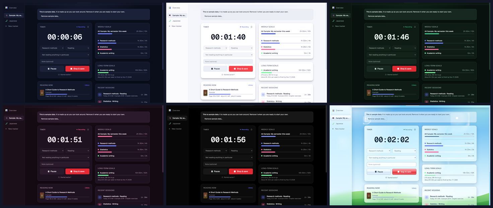

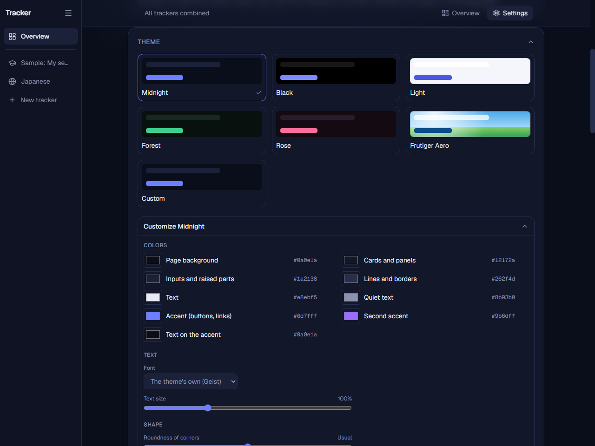
- Customize (under the themes) changes any theme’s colours one by one, the font (the theme’s own, a system font, or one you name), the text size and how round the corners are. Everything shows on the page at once. A small button puts any colour back; Reset restores the theme.
- If the colours you pick make some text hard to read, a warning says which text and how far off it is. Every built-in theme passes the standard readability rule (WCAG AA).
- Custom starts from the colours of any theme you pick and lets you build your own.
- Minimise what you do not use. Every section of both settings pages has a title you can click to minimise it (and again to open it). The choice is remembered in this browser, and a link that points at a minimised section opens it.
- Theme and look are remembered in this browser and apply to every tracker. Show cover pictures (Settings, Library) hides or shows book covers everywhere.
The pages also fit a narrow window or a small screen:

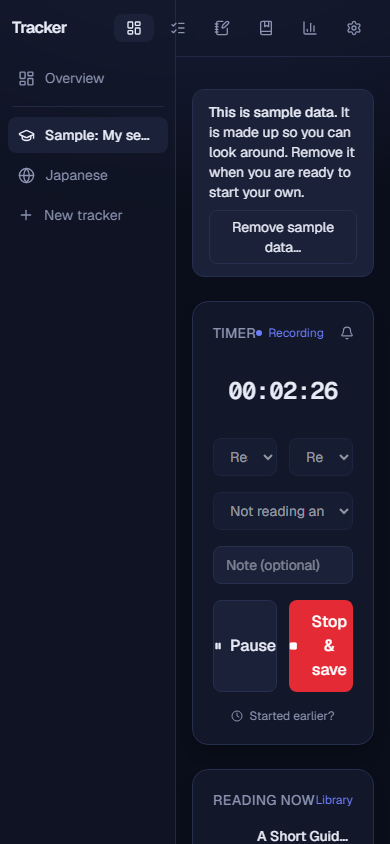
14. Backups, exports, moving

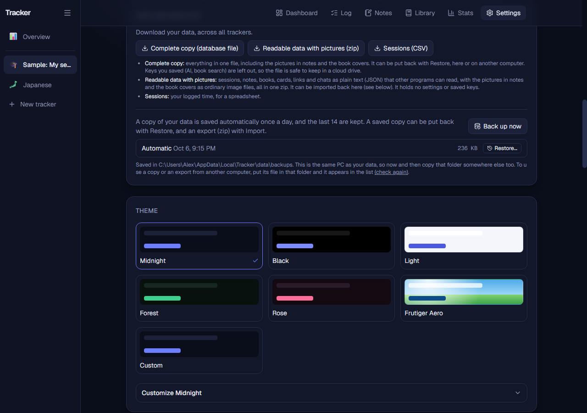
Where your data is
Everything (sessions, notes, books, pictures and covers) is in one file, tracker.db, in %LOCALAPPDATA%\Tracker\data (paste that into the File Explorer address bar; on a Mac, ~/Library/Application Support/Tracker/data). Saved copies are in its backups folder. Overview, Settings, Privacy lists all the places for your computer.
Saved copies
- Tracker saves one copy automatically each day and keeps the last 14. Back up now makes one on request; those are kept until you remove them.
- Tracker also saves a copy by itself before something risky, and labels it in the list: Before a restore, Before an update (when a new version has to change the database) and Before a delete (deleting a tracker). The list also shows Automatic, Manual, Export file and Other file entries.
- Restore... on a saved copy shows what is in it (trackers, sessions, hours, notes, books) next to what you have now, and asks you to confirm. Everything you have now is replaced by the copy, including its settings; keys you saved on this computer are kept unless the copy has its own. Your current data is saved first as Before a restore, so a restore can be undone. A copy from an older version is brought up to date; one from a newer version is refused (update Tracker first).
- Those copies live on the same computer as your data. Now and then copy the folder to a USB stick or cloud drive.
Importing a file
Import from a file..., next to Back up now, lets you pick a complete copy (.db) or a readable-data zip from anywhere on your computer, for example one made on another computer or kept on a USB stick. Tracker keeps a copy of it in the list of saved copies, shows what is in it next to what you have now, and replaces nothing until you confirm. A file that does not start like one of Tracker’s own files is refused, and a file that is a database but not Tracker’s is explained in the preview.
Taking your data with you
| Download | What it is for |
|---|---|
| Complete copy (database file) | Everything in one file, pictures and covers included. Restore accepts it here or on another computer. |
| Readable data with pictures (zip) | Sessions, notes, books, cards, links and chats as plain text (JSON) that other programs can read, with pictures as ordinary image files. It holds no settings or keys. It can be imported back: a zip in the backups folder appears in the list as an Export file with an Import... button. Importing replaces everything you have with the zip’s data (after saving a copy first); your settings and keys stay. The AI search index is not part of an export, so press Update the search index afterwards. |
| Sessions (CSV) | Your logged time for a spreadsheet. |
All three downloads cover all your trackers. Your saved keys (AI, book search) are left out of the complete copy and the zip on purpose, so the files are safe in a cloud drive.
Moving to another computer
Install Tracker there, make a complete copy or a zip here, and on the new computer press Import from a file... and pick it (see below). Or, with Tracker closed on both, copy the whole %LOCALAPPDATA%\Tracker folder (~/Library/Application Support/Tracker on a Mac).
If the data file is damaged
After a crash, a power cut or a disk problem the file can become unreadable. Tracker then still starts, says so in plain words, and lists the healthy saved copies it found with what each holds. Use this copy puts one in place; the damaged file is not deleted but moved to a damaged folder next to your data. Anything you added after that copy was made is not in it.

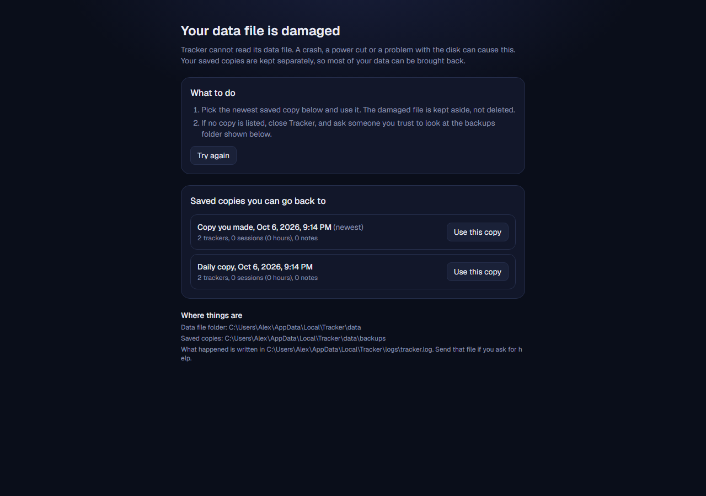
15. Updates

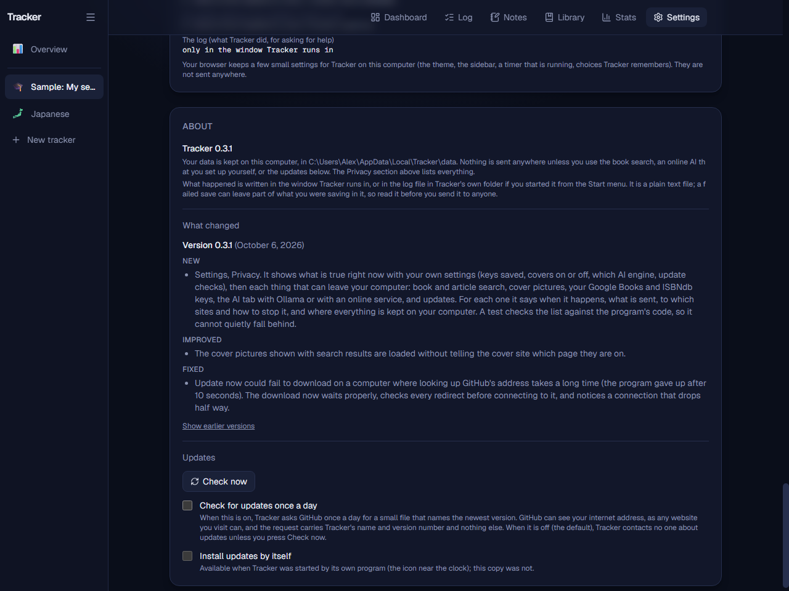
- Overview, Settings, About also has a link to the terms of use, the contact address and the GitHub issues page. They are links you click; Tracker sends nothing by itself.
- Check now asks whether a newer version exists. It is the only thing that contacts anyone unless you turn the next option on.
- Check for updates once a day (off by default) does the same by itself, once a day.
- When a newer version exists, Update now downloads it from GitHub (about 45 MB), checks that it is the file signed for Tracker, saves a copy of your data, closes Tracker, installs it and opens Tracker again; the page reloads by itself. Your data stays as it is.
- Install updates by itself (off by default) downloads a newer version in the background and installs it the next time Tracker starts. It also turns on the daily check.
- Only an update signed with Tracker’s own key is ever installed automatically, and the program that runs the installer checks that signature (and the file’s checksum) again before it runs anything. An update that is not signed is announced with a link, and you run it yourself.
- You can always update by hand: download the newest Tracker-Setup.exe and run it. It closes Tracker, installs over it and keeps your data. On a Mac: quit Tracker and drag the Tracker from the newest Tracker-Mac.dmg onto the Applications folder. (On a Mac, Update now works only when Tracker is in a folder you can change, such as Applications.) (Versions before 0.3.0 cannot update themselves; install 0.3.0 or later by hand once.)
- Each release lists a SHA-256 checksum. In PowerShell,
Get-FileHash .\Tracker-Setup.exeshould show the same number; on a Mac,shasum -a 256 Tracker-Mac.dmgin Terminal.
16. Privacy
Your sessions, notes, books and pictures stay on your computer. These are the only things that can leave it, and only when you use them:
| What | When | What is sent, and to whom |
|---|---|---|
| Book and article search | Only when you press Search | The ISBN, DOI or words you typed, to Open Library and Crossref (and Google Books or ISBNdb if you saved a key). |
| Cover pictures | While search results show them, and once when you save a book from a search | The cover’s address, to the cover site, without telling it which page you are on. Turn off Show cover pictures and your browser loads none. |
| Your Google Books and ISBNdb keys | Only if you save one | The key, to its own service only. |
| AI with Ollama | Only when you use the AI tab | Your question and the notes found for it, to Ollama at the address in settings (this computer by default). |
| AI with an online service | Only if you choose it and save a key | The same, to that service, with your key. The one case where the text of your notes leaves your computer. |
| Updates | Check now, the daily check, Update now (the last two are off by default) | A request for one small file that carries only “Tracker” and the version; then the installer file if you update. |
There are no analytics, crash reports, accounts or advertising. Fonts and icons are part of the program. Inside Tracker, Overview, Settings, Privacy shows this list again with your settings (“Right now”), the sites each item talks to, how to stop it and where everything is kept, and a test checks that list against the program’s code.

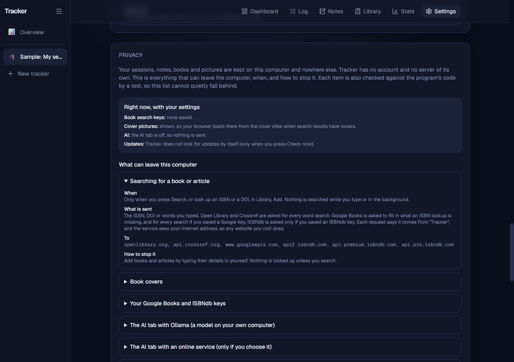
17. Keyboard and accessibility
- Everything can be done with the keyboard: Tab and Shift+Tab move between controls, Enter or Space press them, and the focus is always visible.
- Windows that open on top (New tracker, adding a book) keep Tab inside them, close with Esc and give the focus back to what opened them.
- In a list with a grip (courses, activities, notes), focus the grip and press Up or Down to move the item. On touch screens it becomes two small arrow buttons. Trackers in the sidebar are moved with the Move up and Move down buttons in each tracker’s Settings, under This tracker.
- Ctrl+Enter saves a note. This and the graph’s shortcuts can be changed in each tracker’s Settings, Shortcuts.
- Every button and field has a name a screen reader can read, each page has a heading, and error messages are announced when they appear.
- Text in every built-in theme meets the WCAG AA contrast of 4.5 to 1, and the theme editor warns about colours that do not. Calendar squares are at least 24 pixels wide.
- The graph’s animation follows your computer’s “reduce motion” setting unless you choose otherwise.
What has not been done: it has been checked with automated tools and by keyboard, but not yet with a real screen reader. If something does not work for you, write to clite.ka@gmail.com or open an issue on GitHub.
18. Troubleshooting
Windows says “Windows protected your PC”
The installer is not signed with a paid code-signing certificate. Choose More info, then Run anyway. To check the file is the real one, compare its SHA-256 (Get-FileHash) with the checksum on the release page.
Nothing opened, or the browser says it cannot connect
Wait a few seconds and reload: Tracker takes a moment to start. Look for its icon near the clock (the little arrow shows hidden icons), or in the menu bar on a Mac; clicking it opens Tracker. Starting Tracker again just opens the running one. If it still fails, open the log (right-click the icon, Show the log folder) and read the last lines.
I cannot find the tray icon
Windows may hide it under the arrow next to the clock. Drag it out to keep it visible. You can always start Tracker from the Start menu. On a Mac with a full menu bar, icons can be hidden (behind the notch on a laptop); opening Tracker from the Applications folder opens the running one.
macOS says Tracker cannot be opened
That is the first-start check, once: see Install on a Mac. If Update now says “Move Tracker into your Applications folder first”, Tracker is running from the disk image or a folder you cannot change: drag it into Applications and start it from there.
“Your data file is damaged”
Choose the newest saved copy listed and press Use this copy. The damaged file is kept in the damaged folder. See Backups. If no copy is listed, close Tracker and look in the backups folder shown on that page; the copies there are ordinary .db files, and someone you trust can help you look.
“The disk is full”, or a save fails
Free some space (empty the Recycle Bin, remove files you do not need) and try again. What you saved earlier is safe, and a running timer keeps running until a save works.
“Tracker cannot write to its data” or “Your data is busy”
A security or sync program may be holding the data folder. Wait a few seconds and retry; if it keeps happening, allow Tracker to use %LOCALAPPDATA%\Tracker (~/Library/Application Support/Tracker on a Mac).
A book search finds nothing, or says a service did not answer
Check your internet connection. Open Library does not know every edition; add an ISBNdb or Google Books key in Overview, Settings, Book search (see The Library), or choose Enter it by hand instead. A search for an article needs its DOI or title words (Crossref).
Update now does not work
It says why. If it fails to download, check your connection and try again; you can always run the newest Tracker-Setup.exe by hand. Version 0.3.0 could give up on computers where looking up GitHub’s address is slow; 0.3.1 fixed that, so update by hand to 0.3.1 or later once.
The AI tab says to choose a model, or cannot reach Ollama
Install Ollama from ollama.com and make sure it is running (its icon is near the clock), then open Overview, Settings, AI assistant, and press check again. Choose a model that answers questions (and, optionally, one that searches your notes); the suggestions listed for your computer can be downloaded from there. Test the connection tells you which part fails.
“Tracker cannot find its data file”
The data file is not where Tracker expects it, or cannot be opened. Close Tracker and open it again. If the file is really gone, Tracker starts fresh, and your saved copies are still in the backups folder: open Overview, Settings, Data and backups, and restore one.
I started a timer on one computer and cannot see it on another
The running timer lives in the browser it was started in. Tracker data does not sync between computers; save the session where you started it.
Where is the log, and what do I send when I ask for help?
Right-click the Tracker icon and choose Show the log folder (or see Overview, Settings, About). It is a plain text file named tracker.log. A failed save can leave a piece of what you were saving in it, so read it before you send it to anyone (for example to clite.ka@gmail.com), and send only what you are comfortable with.
How do I remove all my data?
Uninstall Tracker and answer Yes when it asks about your data, or delete the %LOCALAPPDATA%\Tracker folder (on a Mac, ~/Library/Application Support/Tracker) with Tracker closed. This cannot be undone, so make a complete copy first if you might want it.
19. Questions
Is it free? Is it open source?
It is free to download and use. It is not open source: the program’s code is not published. The terms of use say what you may do with it.
Does it work without the internet?
Yes. The timer, log, notes, goals, stats, backups and the AI tab with Ollama on your computer all work offline. Only book lookups, covers, updates and an online AI service need a connection.
Can two people share a tracker, or can I use it on my phone?
No. Tracker is a private program for one person on one computer. Your data is not shared or synced, and the program answers only to its own computer.
What happens to my data if I update?
It stays. A newer version installs over the old one, brings the data file up to date if needed, and a copy is saved first.
How much data can it hold?
It is built for years of daily use by one person; there is no fixed limit. Pictures in notes make the data file bigger, so the backups folder grows with them (daily copies are limited to 14).
Does it work on a Mac or Linux?
On a Mac, yes: macOS 13.5 or newer, Apple Silicon and Intel (Install on a Mac). On Linux, not yet.
Who made it, and how do I report a problem or suggest something?
Kerem Ates makes it. Write to clite.ka@gmail.com, or open an issue on GitHub if you have a GitHub account. Please read your log first (see Troubleshooting) and do not send anything private.
20. Words used
| Word | Meaning |
|---|---|
| Tracker (a tracker) | One of your areas, with its own courses, activities, notes and library. |
| Course / subfield | A part of a tracker; you choose what it is called. |
| Passive course | A course left out of the weekly goals list; its time and goals are kept. |
| Streak | Days in a row with time logged. |
| Heatmap (calendar) | The grid of days on the Dashboard; a darker square means more time. |
| Primary, secondary and tertiary note | How far down a note is: a primary note is about a book (or has no note above it), a secondary note is under a primary note, a tertiary note is under a secondary note or further down. The graph draws each level’s line in its own look. |
| Wikilink | A link from one note to another written as [[Title]]. |
| Unwritten link | A link to a note title that does not exist yet. |
| ISBN / DOI | The number that identifies a book (ISBN) or an article (DOI). |
| BibTeX / RIS | Formats that reference managers and word processors use for citations. |
| Ollama | A free program that runs AI language models on your own computer. |
| Search index | What lets the AI find the right pieces of your notes; refreshed with “Update the search index” in Overview, Settings, AI assistant. |
| Spaced repetition | Showing a flashcard again after a longer gap each time you know it. |
| Complete copy | A single file holding all your data, which Restore accepts. |
| SHA-256 checksum | A fingerprint of a file; if two files have the same one, they are identical. |
| Signed update | An update carrying a signature made with Tracker’s private key, which Tracker checks before installing it by itself. |